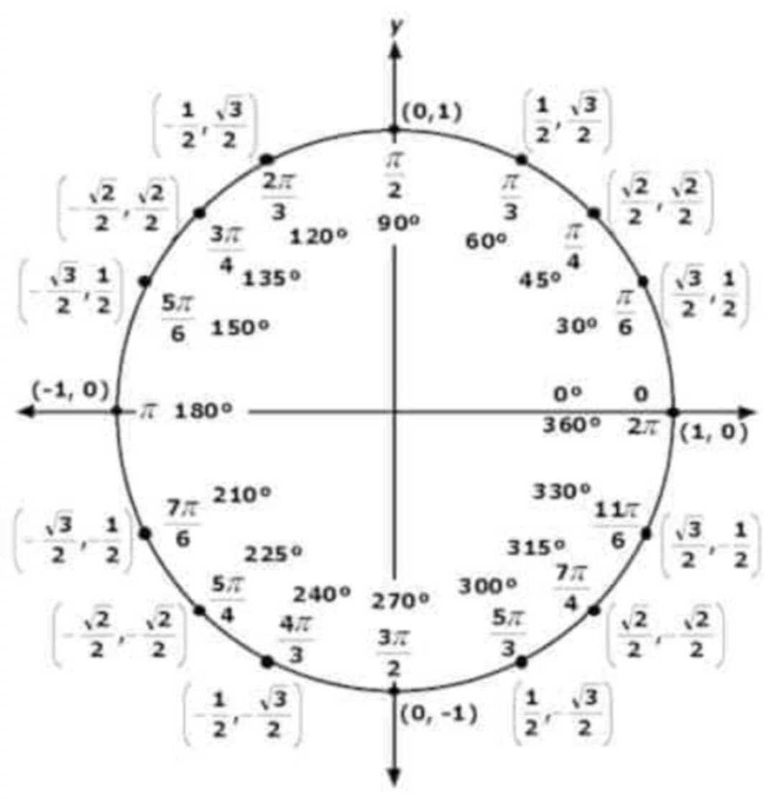

Introduction
How to know co-terminal angles?
Two angles are co-terminal if they are drawn in the standard position and both have their terminal sides in the same location.
What angle measurements would result in the same initial and terminal side position as a 0 degree angle? Imagine if you spin the terminal side counterclockwise once all the way around the circle until both sides of the angle point toward the 3 again. The final result looks the same as the 0 degree angle. However, the blue side was rotated through 360 degrees. Therefore, 360 degrees is a coterminal angle to 0 degrees. The only difference in the measures is indicated by the rotation arrow.

Fun Fact: Coterminal angles are angles that begin and end in the same place as each other. So when one skateboarder does a 360 spin and another skateboarder does a 720 spin these two angles are coterminal. And if you didn't see the spin you would not know either of them had done anything because both are also coterminal.
